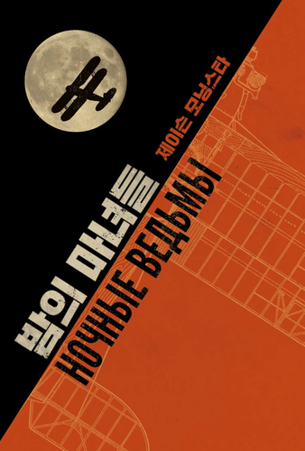

"밤의 마녀들"은 제이슨 모닝스타가 집필하고 도서출판사 초여명이 국내 출판한 TRPG 룰북으로, 독소전쟁을 배경으로 소련의 최전방에 주둔한 공군 588부대에서 복무한 여성들의 이야기다.
밤의 마녀들은 제 588야간폭격연대의 놀라운 활약을 재현하는 RPG다. 그러나 사실 전투와 전황에 초첨을 맞추는 RPG는 아니다. 이야기의 상당 부분은 임무와 임무 사이, 사람과 사람 사이에 벌어집니다. 캐릭터들은 엄청나게 많이 비행을 하지만, 그중에서도 플레이에 드러나는 것은 가장 괴로운 시련의 순간들입니다. 정말 재미있는 일은 지옥과 지옥의 틈새, 즉 지상에서 벌어집니다.